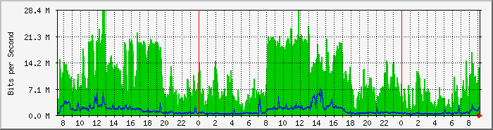
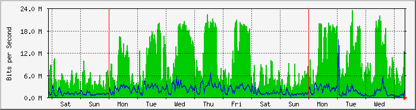
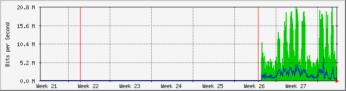
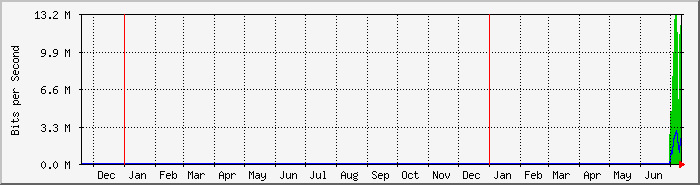

MikroTik RB4011iGS+ Interfaz WAN1 (ether1) (Velez - ISP Claro) - San Carlos Cordoba
| Equipo: | MikroTik RB4011iGS+ |
| Mantenido por: | redes@ersaurbano.com |
| Descripcion: | ether1 |
| Tipo de Puerta: | ethernetCsmacd (6) |
| Nombre de Puerta: | ether1 |
| Max Speed: | 125.0 MBytes/s |
| Ip: | 10.0.10.98 (No DNS name) |
The statistics were last updated Thursday, 14 July 2022 at 9:16,
at which time 'Ersa-SanCarlos' had been up for 6 days, 0:01:40.
`Daily' Graph (5 Minute Average)

|
Max |
Average |
Current |
| In |
28.4 Mb/s (2.8%) |
10.3 Mb/s (1.0%) |
11.7 Mb/s (1.2%) |
| Out |
6974.2 kb/s (0.7%) |
1195.0 kb/s (0.1%) |
1853.7 kb/s (0.2%) |
`Weekly' Graph (30 Minute Average)

|
Max |
Average |
Current |
| In |
23.5 Mb/s (2.4%) |
8828.7 kb/s (0.9%) |
8798.9 kb/s (0.9%) |
| Out |
15.5 Mb/s (1.6%) |
1773.2 kb/s (0.2%) |
1304.2 kb/s (0.1%) |
`Monthly' Graph (2 Hour Average)

|
Max |
Average |
Current |
| In |
20.6 Mb/s (2.1%) |
8802.3 kb/s (0.9%) |
3912.2 kb/s (0.4%) |
| Out |
6731.1 kb/s (0.7%) |
1762.2 kb/s (0.2%) |
606.4 kb/s (0.1%) |
`Yearly' Graph (1 Day Average)

|
Max |
Average |
Current |
| In |
13.1 Mb/s (1.3%) |
8289.5 kb/s (0.8%) |
12.2 Mb/s (1.2%) |
| Out |
2892.3 kb/s (0.3%) |
1754.9 kb/s (0.2%) |
1895.5 kb/s (0.2%) |
| GREEN ### |
Incoming Traffic in Bits per Second |
| BLUE ### |
Outgoing Traffic in Bits per Second |